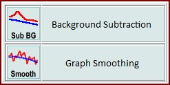
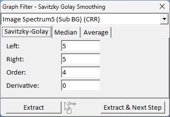
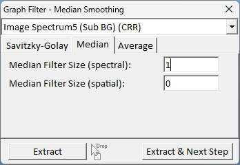
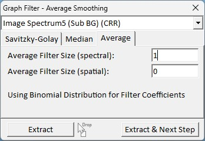

描述
使用此对话框，可以对光谱应用多种光谱平滑滤波器或进行宇宙射线去除，这是光谱预处理的第一步。
输入与结果
输入：
一个或多个图谱对象（单光谱、线光谱或图像图谱对象）。
结果：
一个平滑或宇宙射线去除后的图谱数据对象。
用户界面
提取（按钮和拖放区）
按下"提取"按钮以对输入图谱对象的所有光谱启动当前选择的平滑或宇宙射线去除算法。
您也可以从项目管理器拖放多个图谱对象到该按钮上，以使用相同的算法和设置进行批处理。
提取并下一步（按钮）
向导功能：您可以选择是否使用当前计算的结果进行背景扣除或进一步的图谱平滑算法：

如果选择"Savitzky-Golay"选项卡，则使用 Savitzky-Golay 滤波算法对图谱进行平滑。

左（整数编辑框）：
定义平滑算法的窗口大小（从当前像素向左）
总窗口大小为 左 + 右 + 1。
右（整数编辑框）：
定义平滑算法的窗口大小（从当前像素向右）
总窗口大小为 左 + 右 + 1。
阶次（整数编辑框）：
拟合到平滑窗口的多项式的阶次。
导数（整数编辑框）：
定义滤波器的导数阶次。值为 0 表示不进行求导，即仅进行平滑处理。
如果输入值为 1，计算结果将是一阶导数；所得数据可用于例如在进行基分析时对荧光不敏感。
如果选择中值选项卡，则使用中值滤波算法对图谱进行平滑。

中值滤波器大小（光谱）：
中值滤波器的光谱滤波器大小。总光谱窗口大小为 2*<滤波器大小> + 1。
中值滤波器大小（空间）：
中值滤波器的空间滤波器大小。如果大于零，则使用相邻扫描像素的光谱进行平滑。
总窗口大小为 <滤波器大小 * 2 + 1>^2 乘以总光谱窗口大小。
如果选择平均选项卡，则使用采用二项式分布滤波器系数的平均滤波算法对图谱进行平滑。

平均滤波器大小（光谱）：
平均滤波器的光谱滤波器大小。总光谱窗口大小为 2*<滤波器大小> + 1。
平均滤波器大小（空间）：
平均滤波器的空间滤波器大小。如果大于零，则使用相邻扫描像素的光谱进行平滑。
总窗口大小为 <滤波器大小 * 2 + 1>^2 乘以总光谱窗口大小。

预览图谱查看器窗口以红色图谱显示原始图谱对象，以蓝色图谱显示结果预览。